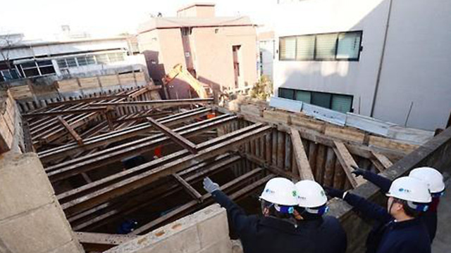

국토교통부(장관 김현미)는 ｢건축물 안전관리｣ 강화를 위해 3.19(화)부터 건축안전팀을 신설한다고 밝혔다. * 팀장 : 1명, 팀원 6명(사무관 3, 주무관 3)
이는 최근 계속되는 건축물 안전사고로 인하여 신축 건축물에 대한 안전기준 강화정책과 더불어 이미 사용중인 기존 건축물에 대한 안전관리 정책을 보다 강화하기 위함이다.
* ‘17.12 제천 화재, ’18.1 밀양 화재, ‘18.6 용산 건축물 붕괴, ’18.12 대종빌딩 균열 등
특히, 30년 이상된 노후 건축물이 전체 건축물(719만동)의 37%이며, 향후 ‘20년까지 40%수준으로 증가될 전망으로 노후 건축물 등에 대한 안전관리 정책이 시급히 필요한 실정이다.
이번에 신설되는 건축안전팀은 화재성능보강, 내진성능보강, 건축물 안전점검 등 기존 건축물에 대한 안전정책을 주로 담당하게 된다.

이 중 화재성능보강사업은 화재취약 건축물*에 대하여 성능보강비용을 보조해 주는 사업으로 현재 신청접수(3.4~4.30) 중에 있으며, 내진성능보강의 경우, 지진에 취약한 건축물의 우선순위를 정하고 종전보다 간소화된 방법으로 내진성능을 평가하는 사업을 시행한다.
* (대상) 의료‧노유자시설‧지역아동센터‧청소년수련원‧고시원‧목욕탕‧산후조리원‧학원
(규모) ‘19년 9.6억원, 총 72개동
내진성능보강의 경우, 지진에 취약한 건축물의 우선순위를 정하고 종전보다 간소화된 방법으로 내진성능을 평가하는 사업을 시행한다.
건축안전팀은 또한 기존 건축물에 대한 안전정책과 더불어 신축 건축물의 안전관리 기준도 지속적으로 강화‧관리할 예정이다.
특히, 건축자재 유통과정에서 방화문, 내화충전구조의 품질을 종합평가하는 품질인정제도를 도입할 예정이다.
품질인정제도는 성능시험 당시 제품과 다른 불량 건축자재를 제조․유통하는 사례를 근절하기 위해 도입되며, 생산 또는 공사 현장에서 적발 시 사용정지 등을 즉시 명할 수 있는 기준도 마련한다.
국토교통부 김상문 건축정책관은 “이번에 신설되는 건축안전팀은 건축물 안전관리를 위한 전담부서인 만큼 앞으로 체감도 높은 생활밀착형 정책개발을 통해 안전한 생활환경을 조성할 수 있도록 노력하겠다”고 밝혔다.
 190319(조간)건축안전팀 신설_건축물 안전관리정책강화(건축정책과).pdf
190319(조간)건축안전팀 신설_건축물 안전관리정책강화(건축정책과).pdf
준불연 가등급 EPS 단열재 DK보드
건축용 / 드라이비트용 / 판넬용
문의 1855-2240